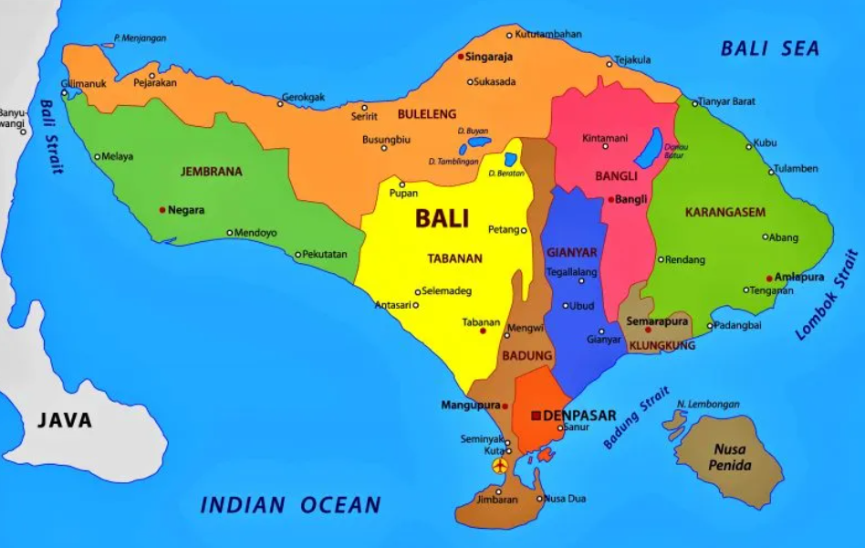

🔇
👨💻
Posisi Bali dalam NKRI
Lihatlah peta Indonesia. Bali adalah bagian penting dari NKRI.

Provinsi Bali terletak di antara Pulau Jawa dan Pulau Lombok.
Peta Wilayah Provinsi Bali

Klik tombol daerah
...
Pilih nama daerah untuk melihat detail.